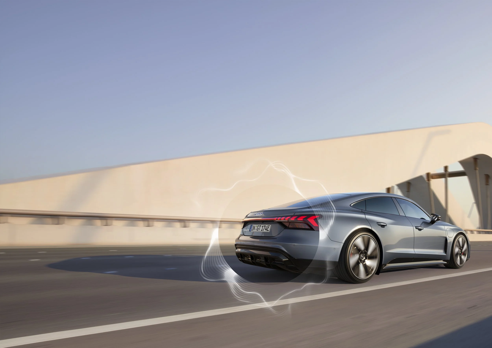
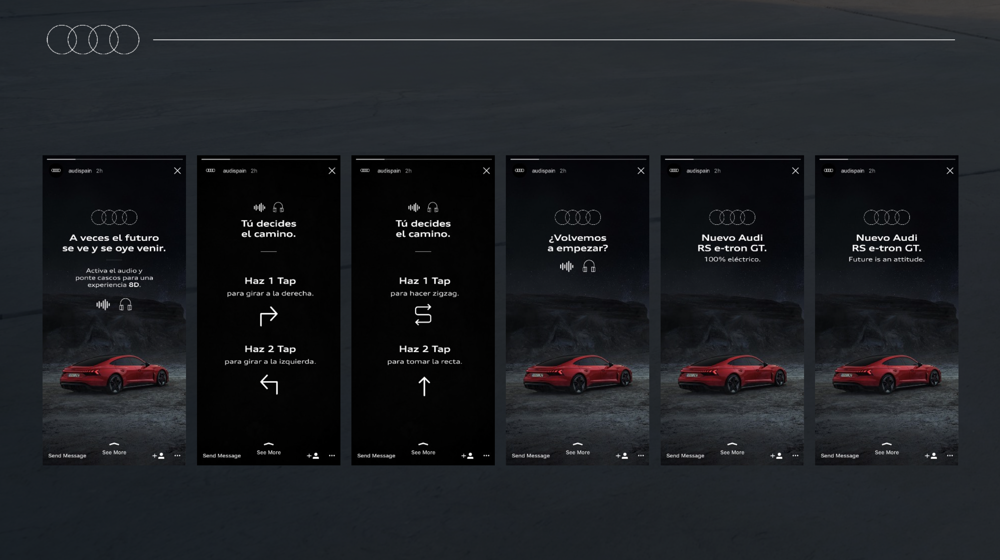

Campaña Audi RS e-tron GT – 2021
Una experiencia auditiva con sistema 8D e interactiva. Ponte los cascos para que funcione.
> IG Stories Interactivo / Adaptación a IG TV y Youtube
> Brief: Dar a conocer el nuevo Audi RS e-tron GT con una acción en RRSS interativa.
> Director de Arte: Ferran León / Directora Creativa: Laura Bolón

Campaña Audi R8 – 2020
Una experiencia auditivo con sistema 8D. Ponte los cascos para que funcione.
> IG/FB/YB